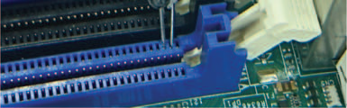
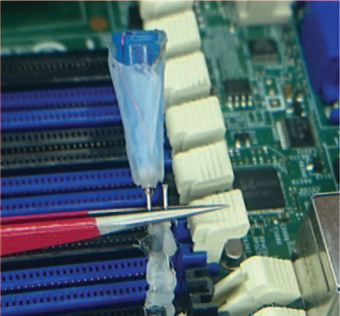
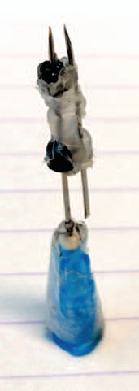

ECC 메모리가 Rowhammer 공격을 막아줄 것이라는 믿음이 'ECCploit'이라는 새로운 공격 기법 앞에서 산산조각 나는 이야기예요.
Rowhammer는 DRAM 특정 행(row)을 반복적으로 접근하여 인접한 행의 비트 값을 뒤집는 공격 기법이에요. 이 공격은 커널 권한 탈취, 샌드박스 탈출, 암호화 키 유출 등 심각한 보안 위협을 초래해요. 하드웨어 레벨의 근본적인 취약점이기 때문에 소프트웨어 패치만으로는 완전한 방어가 어렵고, 보안 커뮤니티는 ECC(Error Correcting Code) 메모리를 주요 방어 수단으로 주목해왔어요.
ECC 메모리는 데이터 비트에 추가적인 패리티 비트를 더해 단일 비트 오류를 자동으로 수정하고 다중 비트 오류를 감지하는 기술이에요. 서버급 시스템에서는 ECC 메모리가 표준으로 사용되며, 이로 인해 많은 연구자들이 서버 환경에서는 Rowhammer 공격이 실질적으로 불가능하다고 가정해왔어요. 하지만 상용 시스템의 ECC 구현 세부 사항이 공개되지 않아 실제 보호 수준을 검증하기 어려웠고, 기존 Rowhammer 기법 또한 ECC 환경에서 신뢰성 있는 비트 플립을 만들어내지 못했어요.
ECC가 Rowhammer를 방어한다는 믿음은 검증되지 않은 가정에 기반해 있어요. 이 논문은 ECC의 내부 동작을 리버스 엔지니어링하고, ECC 환경에서도 신뢰성 있는 Rowhammer 공격이 가능함을 실험적으로 증명하는 것을 핵심 목표로 삼아요.
연구팀은 ECC의 내부 구현을 파악하기 위해 맞춤형 하드웨어 프로브, Rowhammer 비트 플립, 그리고 콜드 부팅 공격을 결합한 새로운 리버스 엔지니어링 접근법을 개발했어요. 맞춤형 하드웨어 프로브를 이용해 메모리 버스 신호를 직접 관찰하고, 의도적인 Rowhammer 비트 플립을 통해 ECC 코드워드 구조를 추론했어요. 콜드 부팅 공격은 DRAM에 남아있는 데이터를 분석해 ECC 알고리즘의 정확한 파라미터(예: 해밍 코드의 패리티 매트릭스)를 복원하는 데 활용됐어요.
핵심 공격 기법인 ECCploit은 두 가지 요소를 결합해요. 첫째, 구성 가능한 데이터 패턴을 이용해 ECC가 수정 가능한 단일 비트 플립이 아닌, 수정 불가능한 다중 비트 플립을 유도하는 비트 플립 제어 기술을 사용해요. 둘째, ECC 메모리 컨트롤러에서 발생하는 새로운 사이드 채널을 이용해 ECC 수정 이벤트 발생 여부를 외부에서 감지하고, 이를 피드백 삼아 공격 조건을 정밀하게 조율해요. 이 두 기술의 결합으로 ECC의 방어 메커니즘을 우회하는 안정적인 공격이 가능해져요.
ECC는 단일 비트 오류를 수정하지만, 공격자가 동일 코드워드 내에서 의도적으로 다중 비트 플립을 유도하면 ECC는 이를 수정하지 못하고 오히려 잘못된 데이터를 허용하게 돼요. 여기에 메모리 컨트롤러의 타이밍 사이드 채널을 더하면, 공격자는 공격 성공 여부를 실시간으로 파악하며 정밀한 공격을 반복 시도할 수 있어요.
연구팀은 AMD 및 Intel 기반의 다양한 상용 서버 플랫폼에서 ECCploit을 검증했어요. 실험 결과 ECC 메모리가 Rowhammer의 공격 표면을 줄이기는 하지만 완전히 차단하지는 못함을 확인했어요. ECCploit은 ECC가 없는 환경의 기존 Rowhammer 익스플로잇과 유사한 수준의 공격 성공률을 보이며, 이전 Rowhammer 기반 권한 상승 익스플로잇의 동작을 ECC 환경에서도 모방할 수 있음을 실증했어요. 또한 ECC 수정 이벤트를 사이드 채널로 활용하면 공격 성공 가능성을 크게 높일 수 있다는 것도 확인했어요.
HBM 및 DRAM 회로 설계자 관점에서 이 논문은 ECC 구현 방식 자체의 취약성을 드러낸다는 점에서 매우 중요한 시사점을 제공해요. 현재 업계 표준인 SECDED 방식은 단일 비트 오류 수정에 최적화되어 있지만, 공격자가 코드워드 경계를 인지하고 다중 비트 플립을 의도적으로 유도할 경우 방어 효과가 급격히 저하돼요. HBM과 같이 고밀도 3D 적층 구조에서는 셀 간 전기적 간섭이 더 크기 때문에 Rowhammer 유사 현상의 발생 가능성도 잠재적으로 높아질 수 있어요.
ECC 코드워드 크기와 패리티 구조를 외부에서 추론할 수 없도록 ECC 구현 정보를 불투명하게 유지하는 것이 방어의 출발점이 될 수 있어요. 또한 ECC 수정 이벤트를 사이드 채널로 노출하는 타이밍 차이를 제거하거나, ECC 수정 빈도를 실시간으로 모니터링해 이상 임계치 초과 시 알림을 발생시키는 하드웨어 카운터 기반 방어도 고려해야 해요. 장기적으로는 ChipKill과 같은 강화된 다중 비트 오류 수정 코드(예: DECTED 이상)나 포인터 기반 무결성 보호 메커니즘을 메모리 컨트롤러 설계에 통합하는 방향이 필요해요.
이 논문의 공격은 물리적 메모리 접근 패턴을 정밀하게 제어할 수 있는 환경을 전제로 해, 실제 클라우드·가상화 환경에서의 재현성은 추가 검증이 필요해요. 또한 ECC 알고리즘의 구체적 파라미터를 리버스 엔지니어링하는 과정이 공격 전제 조건으로 요구되므로, 구현 세부 사항을 철저히 은닉하는 것이 현실적인 1차 방어선이 될 수 있어요.


